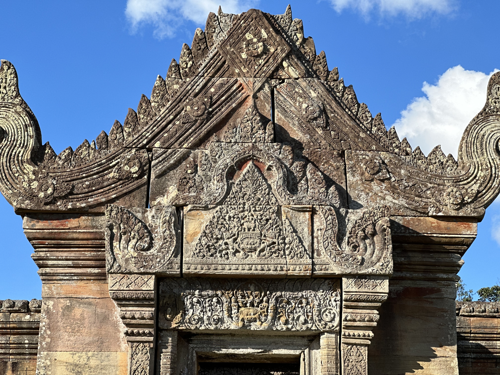

Search Temples, Attractions & Angkor Heritage
Explore Ancient Sites & Attractions by Province
Discover historical monuments, hidden ruins, and heritage temples categorized across different regions.
1. Prasat Pram ប្រាសាទប្រាំ (ព្រំប្រទល់ខេត្តសៀមរាប-ព្រះវិហារ)
ទីតាំង និងប្រវត្តិ៖ ប្រាសាទប្រាំ គឺជាស្ថាបត្យកម្មបុរាណដ៏មានតម្លៃក្នុងតំបន់កោះកេរ សាងសង់ឡើងនៅសតវត្សរ៍ទី១០។

5. Po Damnak Temple ប្រាសាទពោធិ៍ដំណាក់
ប្រវត្តិ និងទីតាំង៖ ប្រាសាទបុរាណសម័យអង្គរដ៏ស្ងាត់ស្ងាត់ ស្ថិតក្នុងឃុំភ្នំត្បែងពីរ ស្រុកគូលែន ខេត្តព្រះវិហារ។
1. Prasat Pram ប្រាសាទប្រាំ (ព្រំប្រទល់ខេត្តសៀមរាប-ព្រះវិហារ)
ទីតាំង និងប្រវត្តិ៖ ប្រាសាទប្រាំ គឺជាស្ថាបត្យកម្មបុរាណដ៏មានតម្លៃក្នុងតំបន់កោះកេរ សាងសង់ឡើងនៅសតវត្សរ៍ទី១០។


2. Prasat Pram (Koh Ker) ប្រាសាទប្រាំ (តំបន់កោះកេរ)
ទីតាំង និងប្រវត្តិ៖ ស្ថិតក្នុងតំបន់បេតិកភណ្ឌពិភពលោក UNESCO កោះកេរ សាងសង់ក្នុងសតវត្សរ៍ទី១០។

3. Preah Khan Kampong Svay ប្រាសាទព្រះខ័នកំពង់ស្វាយ
សារៈសំខាន់យោធា៖ ជាក្រុង និងជាមជ្ឈមណ្ឌលយោធាដ៏សំខាន់ក្នុងសម័យអង្គរ។

4. Pong Toek Temple ប្រាសាទពងទឹក
ភាពលាក់ខ្លួន៖ ប្រាសាទបុរាណលាក់ខ្លួនក្នុងព្រៃធម្មជាតិ តំបន់ព្រះវិហារ។
6. Sambor Prei Kuk ប្រាសាទសំបូរព្រៃគុក
ទីតាំង៖ ខេត្តកំពង់ធំ សម័យមុនអង្គរ (ចេនឡា)។
7. Banteay Srei Temple ប្រាសាទបន្ទាយស្រី
សិល្បៈ៖ ចម្លាក់ថ្មភក់ពណ៌ផ្កាឈូកដ៏វិចិត្រសាល។
8. Beng Mealea Temple ប្រាសាទបេងមាលា
ភាពរំភើប៖ ប្រាសាទបុរាណគ្របដណ្តប់ដោយរុក្ខជាតិធម្មជាតិ។
9. Koh Ker Pyramid ប្រាសាទធំ (កោះកេរ)
ស្ថាបត្យកម្ម៖ គឺជារចនាបទសាជីជ្រុង ៧ជាន់។
Cambodia Tour Journals
5. Po Damnak Temple ប្រាសាទពោធិ៍ដំណាក់
ប្រវត្តិ និងទីតាំង៖ ប្រាសាទបុរាណសម័យអង្គរដ៏ស្ងាត់ស្ងាត់ ស្ថិតក្នុងឃុំភ្នំត្បែងពីរ ស្រុកគូលែន ខេត្តព្រះវិហារ។